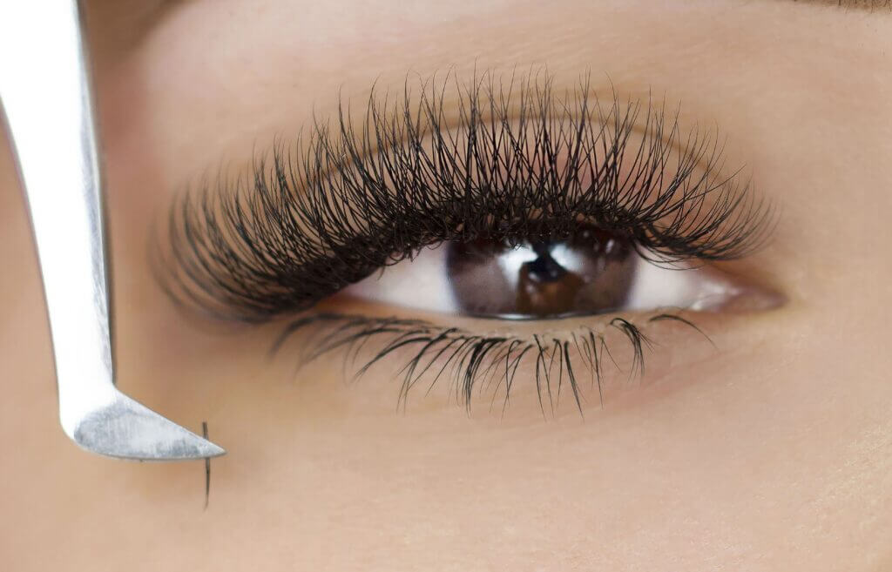
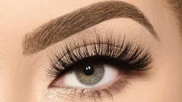

O alongamento de cílios, também conhecido como extensão de cílios, é um procedimento estético que visa melhorar a aparência dos cílios naturais, tornando-os mais longos e volumosos. Aqui está um resumo do que você precisa saber sobre o processo>

Aparência Imediata: Oferece um look dramático sem a necessidade de máscara.>
Personalização: Pode ser personalizado de acordo com o comprimento, curvatura e volume desejados.>
Praticidade: Reduz a necessidade de usar maquiagem nos olhos diariamente.>
Manutenção Regular: As extensões precisam de retoques a cada 2 a 4 semanas, pois os cílios naturais caem e substituem-se naturalmente.>
Higiene: É importante manter os cílios limpos e evitar esfregar os olhos.
Produtos Adequados: Usar produtos de maquiagem e removedores sem óleo para evitar que o adesivo se desintegre mais rapidamente.>

As extensões de cílios têm uma durabilidade variável, geralmente entre 4 a 6 semanas, dependendo de vários fatores como cuidados, estilo de vida e crescimento dos cílios naturais. Aqui está um detalhamento sobre a durabilidade e os ciclos de vida dos cílios>
Crescimento Natural dos Cílios: Cada cílio natural tem um ciclo de crescimento de aproximadamente 6 a 8 semanas. Portanto, à medida que seus cílios naturais caem e novos nascem, as extensões podem começar a se soltar ou parecer menos cheias.>
Manutenção: Para manter o visual sempre impecável, é recomendado fazer retoques a cada 2 a 4 semanas. Durante os retoques, o técnico substitui as extensões que foram perdidas e aplica novas extensões em cílios naturais que ainda estão saudáveis.>
Cuidado com as Extensões: A forma como você cuida das extensões pode influenciar sua durabilidade. Evitar produtos oleosos e água quente, e não esfregar os olhos são cuidados importantes para garantir que as extensões permaneçam intactas por mais tempo.>